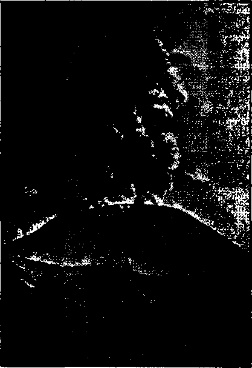

Jehovah’s “Faithful and True Witness”
“Reverend” John Goeken, Un-American
Paricutin—Mexico’s New Mountain
The Survival of Liberty in America
Presenting “This Gospel of the Kingdom”
Index to Volume XXIV of Consolation
Published every other Wedneaday by WATCHTOWER BIBLE AND TRACT SOCIETY, INC.
117 Adams St., Brooklyn I, N. Y.t 17, S. A.
President Secretary Editor
fl a
J1.2G to
OFFICERS
N. H. Knorr
W. E. Van Amburjsh Clayton J. Woodworth
Five Cents a Copy year in the United States Canada and all other countries
NOTICE TO SUBSCRIBERS
Remittances: For your own safety, remit by postal or. express money order. When coin ur currency 1b lost in the ordinary mails, there is no re drees, Remittances from countries other than those named below may be made to the Brooklyn office, but only by International postal money order.
Receipt of a new or renewal subscription will be acknowledged only when requested. Notice of Expiration is sent with the journal one month before subscription, expires. Please renew promptly to avoid loss of copies. Send change of address direct to us rather than to the post office. Your request should reach us at least two weeks before the date of issue with which it is to take effect. Send your old as well as the new address. Copies will not be forwarded by the post office to your new address unless extra postage is provided by you.
Published also in Greek, Portuguese, ' Spanish, and Ukrainian. .
OFFICES FOR OTHER COUNTRIES
England 34 Craven Terrace, London, W. 2
Australia 7 Beresford Road, Strath field. N. S W. South Africa 623 Boston House, Cape Town
Mexico Calzada de Melchor Ocampo 71, Mexico, IX F. Brazil Caixa Postal 1319, Rio de Janeiro
Argentina Calle Honduras 5646-48, Buenos Aires
Entered ae second-class matter at Brooklyn, N. Y,, under the Act of March 3, X37JJ.
Employer Ass°c*ations in California
♦ The committee found that in important sectors of California’s industry the national labor policy had not been honored or observed. The results were observable in continued instability, repeated denials of labor’s rights, and a constant strain on the maintenance of collective-bargaining procedures elsewhere. In part, the causes lay in organized conspiracies of employers’ associations to flout the law. Krom an inspection of the pattern of organized violation and defiance revealed in the California inquiry, the outlines of remedial measures become fairly simple.
Such employers’ association conspiracies should be flatly outlawed.
The California study also reveals-the existence of a wide and important field of economic activity in which civil liberties today are not freely expressed, and in which public intervention is called for to restore them. Employment relations in California’s industrialized agriculture have been left in the unfettered control of employers’ groups and associations.
The results, to be detailed in this report, are almost beyond belief. Unemployment, underemployment, disorganized and haphazard niigrancy, lack of adequate wages or annual income, bad housing, insufficient education, little medical care, the great public burden of relief, the denial of civil liberties, riots, strife, corruption, are all part and parcel of this autocratic system of labor relations that has for decades dominated California’s agricultural industry.— United States Senate Education and Labor Committee.
Prices Are Up in London
♦ Prices are up in London. Peaches, when they are to be had, arc $1.50 each; grapes are 85 cents a pound; cherries are 35c a pound; and berries are 50c for a small basket. Asparagus is 75c a bunch. So says Vancouver Daily Province.
"And in His name shall the nations hope.”—Matthew 12:21, A. R.V.
Volume XXIV Brooklyn, N. Y., Wednesday, September 29, 1943 Number 627
On the Labor Front
THE most important and most widely circulated booklet of the year is Fighting for Liberty on the Home Front. That is not the subject of this story, but it suggested the title. When a war is on, a democracy has many fronts. One of the most important is- the labor front. If nobody did any work, how long would it be before everybody would be ragged, dirty and starved? And if everybody were in that condition at home, how would those at the battle front fare who depended on them for life’s necessities? So, have a look.
The Department of Labor has supplied the information that the average earnings of industrial workers are $1,690.52 a year. The Office of War Information has supplied the information that besides his cash compensation the American soldier receives food, clothing, shelter, medical, dental and. hospital care that bring his total earnings up to $1,700 a year. That being the case, the soldier is $9.48 to the good when the twelve months have been ticked off.
But Labor points out that the cost of sheltering a soldier is only. $10 a month, while the industrial worker pays rent of $50 or more. On the labor front the worker must pay for his own transportation and recreation; he can't ride around in a jeep at government expense. He must watch his steps in the matters of income taxes, suits for debts and insurance premiums, and if he needs legal advice he must get it the best way he can. There are special favors to the soldier in all these matters.
Labor isn’t jealous, but it gives some additional facts.:
The soldier’s former employer is required by law to reinstate him in his job and seniority rights on discharge. He will be given preference in seeking employment with the national government. The soldier’s wife, children, parents, sisters, brothers and grandchildren obtain without cost health and other assistance through systems of insurance, allotments and allowances and maternity and infant care. The government pays to the wife of a service man $28 a month, $40 for the first child and $10 for each additional child. The government even pays alimony to the divorced wife of a soldier, and to parents and other dependents. After discharge, the soldier may receive free medical and hospital care for the remainder of his days. If wounded or injured he is eligible for a pension, and to vocational rehabilitation and placement in employment.
To be sure, the soldier on the battle front runs a chance of being killed. But that is true also on the labor front. Thus, in less than eleven months after the Japanese attack at Pearl Harbor, more than 42,600 war production workers were killed in industrial and other accidents, and, astonishing as it may seem, the statement is made by Dr. Victor G. Heiser, author and medical consultant to the National Association of Manufacturers, that in the same period there were “11,000 war workers killed or injured on and off the job every day”. The doctor thinks that the wives of factory workers should learn how to pack lunch boxes with the kind of lunch that packs a punch, and-.adds:
All the machines in the world are useless
unless we have healthy workers to keep them, running. If we were to do a job in improving the health and efficiency of our industrial manpower comparable to the job we have done and are doing in increasing the productive capacity of our machines, we could deal the Axis a blow that would send them home reel- '
{ mg.
It does not seem that there are any ’women employed as baggagemen, locomotive engineers or firemen; at least, not yet. But there are 861 employed in blast furnaces and steel works, 4,477 in sawmills, 3,100 as bartenders, and 13 as blasters and powdermen. There are 2,114 funeral directors, 1,047 dentists, 51 aviators, and 106,590 bakers, blacksmiths, electricians and machinists. Operatives in the mechanical trades run to 2,046,379,' and the total number of women employed at the time of the census of 1940 -was set at 11,138,178. You probably know several of them, and may be one yourself.
Labor sets out the facts that in England, Russia and Canada the women “are already serving as production soldiers in greater numbers than men. And they’re doing a swell job. They’re working long hours and they’re producing top-notch goods”; and adds:
Many thousands of American women already are employed in aircraft plants and munition factories. We’ve asked union leaders about them. And the almost unanimous response is that they’re doing a better job than the men they’ve replaced. When it comes to precision work and jobs requiring manual dexterity, the gals have got it all over the men. They are much handier and much more efficient at that kind of work. They are also proving themselves expert at riveting and welding—believe it or not. In aircraft plants women now constitute more than 10 percent of the employees doing manual labor, and the men are,having a tough time keeping up with their production pace. :
When one thinks of the women he naturally thinks of their babies; perhaps for the reason explained to her little comrade by a tiny miss that she was ‘related to her father by marriage but to her mother by bornation’. Most people can remember when the most important thing in life was one’s mother.
The widening demand for labor of all kinds is drawing heavily on the young, and cutting off their educational privileges. The National Child Labor Committee, commenting on this feature of the labor front, says:
We are not helping to win the war when we permit an 11-year-old girl to work as a field hand until she literally drops in the field and is finally sent to the hospital with heart trouble. We are serving no good purpose when we allow a 15-year-old boy to work with a dangerous mangle in a laundry until his arm is torn off above his elbow. Nor does it represent sound judgment directed to improving the education of the young (in which such rugged gaps were revealed by the draft figures on illiteracy [340,090 men in the first registration who signed their names with a cross mark]) when boys set up pins in bowling alleys so far into the night that forty fall asleep in class in one school alone. Just within the last two weeks a 13-year-old boy, impressed into a type of emergency farm work, for which he was too young, lost his right arm in a threshing machine. A few such slips might be dismissed as only slips in our protection for childhood and youth, but they are multiplying at a rate that is quite disturbing to thoughtful persons.
The Negro labor front is a ticklish subject to write about. There are some 11,000,000 of them in the United States, and nobody can deny the value of their work in any place where they are given a fair chance. There are 458,444 of them in New York city, 277,731 in Chicago, 250,880 of them in Philadelphia, and more than 100,000 of them in each of the large cities of Atlanta, Birmingham, Baltimore, Detroit, Memphis, St. Louis, and Washington. They are as capable as other men. They cannot be kept down by
fair means; so they are kept down by means such as would seem to appeal peculiarly to such men as 'Adolf the Aryan’. You know what recently took place in Detroit. Homes were built for them; but when they tried to occupy them, whites rioted and Negroes were arrested. A wonderful system as long as it works. But how long will it work in a land fighting for several different kinds of freedom 1 Since then, many Negroes in Detroit have been slain.
There are bright spots. Occasionally there are white men with black hearts, but sometimes there are white men that are really what might be properly called ‘white’. There was such a disclosure at a steelworkers’ convention in Cleveland, Ohio, in the summer of 1942. A Negro delegate, William Fountain, in a voice choked with emotion, urged a struggle against Hitlerism at home as well as abroad. He pleaded that when his fellow delegates at the convention looked at him they should look at him not as a Negro but as a fellow steelworker. His well-timed and forceful oratory brought the entire convention to their feet, cheering. This incident of a C.I.O. convention must have been a mightily moving scene.
About the same time, there was a competition on at a big shipbuilding plant in New Orleans employing 60,000 workers, to see whether white or black workers could turn out 10,500-ton freighters in the least time. There were 500 of these boats to be built in this one plant, so there would seem to have been plenty of opportunity for whites and blacks to show what they could do. What wTere the results obtained is not known.
That headline isn’t as foolish as it looks. It was not so very long ago that there were something like 13,000,000 people in the United States who had nothing to do. The work that they had formerly been doing was being done faster and better by machines of one kind or another. Labor-saving machinery really saves labor. But when a big war comfis along, there is an unprecedented demand for everything that can be imagined, and so people who had given up hope of ever having anything to do suddenly find . themselves in great demand.
One of the first things they are set at is the making of machine tools. Uncle Sam knew there must be a tremendous expansion of machine-tool output; so he put up the money to build great plants in a hurry, at which more of these tools could also be made in a hurry. And the plan worked. Within ten months from Pearl Harbor there was produced every month in the United States more than a year’s normal production of such tools. Labor speaks of this front in this wise:
A survey has disclosed, the War Production Board said, that valuable tools in factories all over the country are idle an average of 14 hours a day. Thousands of critical machine tools turned out in recent months have had no work to do. Many have not been removed from packing eases.
That is an odd headline also, but this Kaiser man is different from any that have gone before. Others make a record of building a big ship in three months. This man, accustomed to building great dams and other huge structures, puts new ideas into the shipbuilding business and has them sliding down the ways in less than a week.
Kaiser thought he needed 50,000 men from New York, so he hired 50 special trains to take them to Portland, Oreg. The journeymen were to get $1.20 an hour, helpers 95c, and laborers 88c, with time and a half for all hours over 40 per week. To be a helper, a man had to know one end of a monkeywrench from the other. It was expected that there would be women welders in the party. The men were to be housed in company barracks at minimum living cost of $13.50 weekly.
Kaiser operates his plants on a 100-percent American Federation of Labor
union basis. Noting the charges of absenteeism among workers, he says that much of the absenteeism is due to the industrialists that employ them, and that -where adequate housing, proper transportation, good working conditions and facilities needed by the workers are pro-■ vided absenteeism drops. Tie stated that i the absenteeism in the Kaiser yards averages between 6 and 8 percent. In other words, 92 percent to 94 percent of the workers on the pay roil show up every morning.
Where a man in charge of a business inherited money from his parents, and not brains, and he finds that 100 percent of his workers do not show up for work, his first impulse is to blame the workers, and not himself. It is an easy way to a false conclusion. The subject needs to be studied. The British have done this and have learned much. Theyhave discovered that much of the absenteeism is due to the rapid expansion of industry and the employment of many workers, especially women, who are unused to factory work; the employment of increasing numbers of married women who find it difficult to combine factory work with home duties and family responsibilities; the added strain imposed by traveling long distances to and from work; the effect of air raids on home life and transport; the lack of suitable facilities for meals in some factories; and the inadequate supervision of workers.
They discovered that time lost by factory workers through sickness, injury and absence without permission varies with the weekly hours of work; that the weekly hours of work over an extended period should not exceed 60 for men or 55 for women; that the workers were stimulated to an increased output by the fall of France, and that in nearly every case the output has remained above the previous level; and that the beneficial effects of a reduction in excessive hours of work, together with the inauguration of staggered holidays, were reflected in an increase in the rate of working afterwards.
The British Ministry of Labor states that 10 percent is a fair average absenteeism over the whole of British industry, and is mostly unavoidable. In coal mining it may run to 15 percent, of which 9 percent is unavoidable. It finds very little absenteeism is due to frivolity or negligence, finds little help in lottery tickets, but does find help in pep talks.
There have been studies in absenteeism in America also. It has been observed that lack of materials, changes in specifications, lack of housing facilities, lack of transportation, lack of day-care for children, lack of entertainment near by, and the need of women to care for their husbands. and of husbands to care for their wives, have had important effects.
Workers get tired of sleeping in hot beds, some of which are in constant use the week round, for those on different shifts. They take time off to look around for better quarters. Can you blame them?
Homesickness takes somfc home for the week-end, and they take a day or two extra.
Some are kept on the pay roll with nothing to do, and it isn’t human nature to stand around wearing a visitor’s badge (to bluff the government inspectors) -while they are waiting for the promised materials to make their appearance.
Some push themselves to a point where they have to take a little time off now and then to avoid complete collapse. Is there anything wrong about that?
There is some luring of workers from one plant to another, and it takes time for a worker to appear in person in answer to an advertisement.
Women -who take a day off now and then cannot properly be charged with absenteeism or loafing; they probably work harder at home on the day off than they would have to work at the factory.
Inconvenient places for payment of income taxes and the obtaining of automobile license tags causes considerable loss of time. Other good reasons exist.
Human nature is not made of iron. After Dunkerque the British thought to work long hours and so catch up with Hitler. The 5 Uday week was changed to a 7-day week, and the hours were jumped to over 60 per week. After four weeks the men showed that they could not stand the pace. On return to the 5^-day schedule, the output was fountl as great as on the 7-day one. In one plant a 64-hour, 7-day week was changed to 56 hours with a rest period at the week-end, with the result that absenteeism was cut in half and the output did not suffer. Output was further improved by safety protection, better ventilation, good lighting, and hot meals on the premises.
The same lessons have been learned in America. Ford discovered that the maximum hours may not exceed 60. When they were, made 70 the production rates on needed materials were greatly, reduced; all of which shows that there is a limit to what men can do. The Berchtesgaden jackass started out to rule the world, and now look at him.
The sympathies of the fair-minded must always be with the workers, and not so much with those that carry the purse. It is still true that "the love of money is a root of all evil”; and because money means power and luxuries, most people are after it, as is apparent on every side.
At hand is a bitter protest from the Seafarers’ International Union of North America regarding the loss of fifty-seven of their men (in the first month of the war) because, though Congress had passed a bill to arm merchant ships long before the country got into the war, and the Maritime Commission had announced that the ships would be armed just as rapidly as they hit port, it was not done. No doubt this situation has long ago
SEPTEMBER 29, 1M3 been corrected, but one cannot read the Seafarers’ open letter to the>ship owners without feeling deeply for them as they write of their comrades going down with the unarmed ships:
We can’t squeeze out any tears for yon. Not when we count onr dead. Fifty-seven of our Brothers went down with those ships. Fiftyseven families have been robbed of their fathers or husbands or sons. The way we figure things, our loss is greater than yours. Not one of our Brothers had so much as an air-rifle with which to protect himself against the enemy raiders. ... A gun and a life raft is little enough to ask for, don’t you think? Then what’s the stall? Are priorities holding things up? Or could it be that you hate to shell out for the cost?
As this is written there is much in the press about the efforts of the coal miners to improve their condition, and not much of it is friendly to the miners. But those who live in mining regions can see the miners’ side of it. A writer in America who seems to know what he is talking about summarizes the situation as follows, in a neighborhood where mere boys are earning upward of $100 a week in munition plants:
Within twenty or thirty miles of large flourishing cities like Pittsburgh, one can find mining communities—"company towns” —which carry one back a full century in civilization’s progress. In some places the houses are nothing but unpainted shacks with straight up-and-down sidings, tar-paper roofs, no cellars, and few, if any, other improvements except electricity. Usually unsewered, these “towns” are turned by summer’s hot weather into cesspools of baffling smells.
Although such places often number dwellings running well into the hundreds, the inhabitants have no village government. Very paternalistically, the operators perform, or fail to perform, the functions normally falling to village or borough governmental departments.
If the miner shows a certain stubbornness in compromising wage-and-work questions, much of his attitude can be traced to bitter-
„ 7
ness deriving from past conditions, conditions which he ascribes to operators’ greediness.
Seven dollars a day, further opine many miners, would be satisfactory if it covered seven hours’ work as the public generally assumes it does. But when he has to spend from fifty to sixty hours underground weekly y in order to have the opportunity of gainfully * working thirty-five hours when conditions permit, the miner feels that his hourly rate has been cut below all fairness. He feels this is especially true since a considerable portion of these excess hours is spent in performing on his own time what, he considers company maintenance work—the setting of posts and the laying of track in his room. A reasonable rate for all portal-to-p or tai time in excess of the seven-hour working day would be much fairer. When a man works twelve hours to earn the $7 due in seven hours, the wage rate is cut to 58c per hour, they argue, and further contend that 58c is too low for a skilled and hazardous occupation.
Increased pay to meet rising living costs and portal-to-portal pay are not the only things which worry miners. They know that, while working, they must make more than a living-, they must lay up reserves for later years. It is the conservative judgment of intelligent lifetime residents of mining areas that the average working life of a miner is around twenty-five years. This means that a miner starting work at twenty may be finished at forty-five. Generally speaking, there are three reasons for this comparatively short working period: first, disability from accidents; second, disability from ill health; and, third, the operators’ general and ruthless practice of discarding older men in favor of younger ones.
Mining’s Occident hazards need no detailing, for the public is generally aware that it is a most hazardous occupation. It is said that very few miners go ten years without serious accidental injury. Cave-ins, falling slate, explosions, electrocution, and the many accidents which cotne from handling power-driven machinery are the most common.
Health hazards are worse than accident ones. Impure, dust-filled air, constant dampness, water underfoot and dripping roofs, hard manual labor and mine temperatures'all serve to break health. “Miners’ asthma,” when the term is loosely used, covers everything from tuberculosis to various irritations of the throat and bronchial tubes which arrive from ‘Tugdust” (microscopic coal dust) and minute rock particles. Coldness, water and general dampness lead to many kinds of rheumatic afflictions. Tugging and straining at mine cars over a long time often wears down a miner’s strength. A loader with twenty-five years’ service is not usually in lusty health.
Most Americans know something of the contribution of $500,000 from the Lewis-controlled mining unions to bring about the first re-election of President Roosevelt; they know of Lewis’ dissatisfaction with the returns on the investment, and of the tiff that finally resulted in government seizure of the mines and the threat to put all miners up to 65 years of age in the army. It may come to that, but it will also probably remain true, as suggested by The Progressive, that “you can’t mine coal with flags”. And, anyway, it seems ridiculous to put miners into involuntary servitude contrary to the Bill of Rights and to insist that this was done so that America and the rest of the world can enjoy the four freedoms sought by the “Atlantic Charter”.
Regimentation of labor is unpopular * in the United States, and though much is written on the subject, and it is being studied as it is practiced in Britain and in Canada, yet Americans do not like the idea. When they read the details of what the Britishers and Canadians stand for, they involuntarily think of the royalty, the king’s sagging crown, and the other things that go to make up what was once the British Empire, and inwardly laugh. • The Americans think they can do the job better without being harnessed or manacled. And they are right.
The Canadian system gives the government authority over all citizens able to work, except farmers, hunters, fisher
men, trappers, priests, clergymen, nurses, teachers, and female servants in homes in which not more than one servant is employed.
The American attitude is summed up by Phil Murray, of the Congress of Industrial Organizations, in this fashion: , A discussion of labor freeze or labor draft is not merely futile nonsense, it is dangerous nonsense. If our manpower distribution today is planless and chaotic, a job freeze simply freezes chaos.
Experiments in job-freezing are under way, and are explained by the able columnist Raymond Clapper as follows:
The first big experiment comes in the Detroit area. Thirty-four kinds of war work are covered, affecting some 600,000 workers. The government cannot directly compel a man to stay on a job, but it can keep him there by forbidding another employer to hire him. That is the method being tried out. Provision is made for appeal by either employers or employees.
It is not intended that the freezing shall be so complete as to prevent change of job for any reason whatsoever. But the burden of obtaining a release to take other employment is placed on the employee. He must .show that he is capable of more highly skilled work than he is doing, or that he is working less than 40 hours a week, or that his job is too far from his home, or offer some other strong reason for being released to take another job.
Nothing like this has been seen in the United States since the days when the newspapers were full of advertisements for the return of runaway slaves. The practice so completely offends all American instincts and traditions that it can only be justified if urgent war necessity leaves no other course.
OF THE 22,000,000 people in this country who were born and raised in homes where English was not spoken, and thus still depend to a large extent upon some foreign language for their information, only 12,000,000 were born abroad. Thus actually 10,000,000 people born in the United States were born in homes where English was not spoken. This vividly demonstrates how foreign languages thrive in the United States long after the people who speak them have entered this country. '
According to the Bureau of the Census, the German-speaking group is the largest in the United States. There are 4,949,000 German-Americans born and raised in homes where German, not English, was the spoken language. The OWI reaches this group through 149 German-language newspapers printed in all parts of the country.
The second language group is the Italian-American, There are 114 Italian-American newspapers, serving 3,766,000 Italian-speaking people.
Third comes the Polish group, con-
SEPTEMBER29, 1943
sisting of 2,416,000 people, served by 75 Polish-language newspapers.
You may be interested in a breakdown of the other foreign-language groups in the United States. Let me emphasize that the population figures given are not the total figure for that nationality group in the United States. For example, there are many more than 2,416,000 Polish-Americans. But only that many Polish-Americans are listed by the Bureau of the Census as born and raised in homes where Polish was spoken instead of English.
There are 1,861,000 Spanish-speaking people in the United States, and 140 Spanish-language newspapers.
There are 585,080 Russian-speaking people in the United States, and 17 Russian-language newspapers.
There are 453,000 Hungarian-speaking people in the United States, and 58 Hungarian-language newspapers.
There are 1,751,100 Yiddish-speaking people in the United States, and 193 Yiddish-language newspapers.
There are 830,000 Swedish-speaking
people in the United States, and 42 Swedish-language newspapers.
There are 83,600 Ukrainian-speaking people in the United States, and 14 ■ Ukrainian-language newspapers.
There are 153,000 Serbo-Croatianspeaking people in the United States, 5 and 16 Serbo-Croatian-language news-1 papers. ,
There are 520,000 Czechoslovak-speaking people in the United States, and 59 Czechoslovakian newspapers.
There are 484,000 Slovak-speaking people in the United States, and 31 Slovak-language newspapers.
There are 230,000 Finnish-speaking people in the United States, and 21 Finnish-language newspapers.
There are 1,412,000 French-speaking people in the United States, and 39 French-language newspapers.
There are 272,000 Lithuanian-speaking people in the United States, and 26 Lithuanian-language newspapers.
There are 658,000 Norwegian-speaking people in the United States, and 38 Nor-' wegian-language newspapers.
There are 273,000 Greek-speaking people in the United States, and 27 Greek-language newspapers.
There are 178,000 Slovenian-speaking people in the United States, and 13 Slovenian-language newspapers.
There are 126,900 Japanese-speaking people in the United States, and 3 Japa-nese-language newspapers.
There are 77,500 Chinese-speaking people in the United States, and 12 Chi-nese-language newspapers.
There are 65,000 Rumanian-speaking people in the United States, and 5 Rumanian-language newspapers.
There are 215,000 Portuguese-speaking people in the United States, and 17 Portuguese-language newspapers.
There are 226,000 Danish-speaking people in the United States, and 18 Dan-ish-language newspapers.
There are 267,000 Dutch-speaking people in the United States, and 15 Dutch-language newspapers.
10
There are 68,000 Armenian-speaking people in the United States, and 16 Armenian-language newspapers.
There are 107,000 Arabic-speaking people in the United States, and 12 Arabic-language newspapers.—From an address by Alan Cranston, delivered in Boston.
A Pot Shot at a Coyote
♦ Sometimes a human creature has so many misfortunes all at once that it is hard to figure it out, and it is harder still to envisage a time when humanity’s affairs will be so ordered and human judgment will be so perfect that there will be no serious accidents whatever. Yet the Scriptures teach just that.
Boyd Fuller, Cokeville, Wyo., is a hide and fur buyer. On the highway three miles from his home, when he saw a coyote 150 yards away, he stopped his truck and took a shot at him. His hard luck began instanter. '
Behind him, coming at 35 miles per hour, was Alfred C. Poland, Afton, Wyo., driving a sedan in which were his daughter and his two little grandsons. As he came up behind the truck he failed to blow the horn, saying afterwards, “It ■was the first time in my life I ever passed another car without sounding the horn.”
As the car went by the truck Fuller’s bullet passed through both rear doors of the sedan, within six inches of the heads of the passengers on the front seat. As the ear stopped, Air. F uller, badly frightened, apologized, got in, and went along to town to part with around $20 for new glass in the sedan doors. While there he received a telephone call that his own small son, falling off the table in his own home, had nearly bitten off his tongue, and had been taken to a hospital in a third town, Montpelier. Fuller left for Montpelier immediately. Could you blame him for almost thinking that somebody was picking on him?
Yes, O inquisitive one, the bullet killed the coyote.
CONSOLATION
COMING out of the subway station and on to Journal Square, Mr, Forlorn threw back his shoulders more resolutely, as if determined to shrug off this bitter conviction that he no longer had anything left to live for. The Bickford’s restaurant front window caught his eye, with its cornfield-and-pumpkin display reminding him that he ought to buy something nice and refreshing, like fresh fruit, to take home to Mrs. Forlorn, Dan, their one and only child, might be lost to them for ever, but that ' couldn’t be helped; he would simply have to buck up and be a bit more cheerful in his old age, for Mrs. Forlorn’s sake. .
Suddenly, for some reason, Mr. Forlorn’s eye was caught by the figure of a young girl. She was standing on the edge of the sidewalk, just ahead, making him aware that the sun was still shining, as, sinking down alongside the Stanley theater, it threw a saffron glint into the fringes of her hair. He would not have called the child especially beautiful; she had a snub nose and big, soft, friendly freckles and brown-lashed eyes that held the inner shyness of woods violets. But for just these very reasons she appeared vitally attractive.
She was holding up a magazine with big headlines across it for the people to read. The headlines announced things that were like the maid herself, springfresh, and alive, and provoking:
“Earth an Eternal Home"; “Does God Torment in Hell?"
As Mr. Forlorn approached, and as the little girl’s eyes met his, he heard her voice, clear as rain, calling out the subtitles from the magazine: “Proof positive from the Scriptures' that the earth will be man’s home forever”; . . . “Has the Creator of the babies, the flowers and the sunsets no more sense than the theologians?”
That question, uttered in candid fearlessness from a young girl’s lips, here SEPTEMBER 29, 1943 in the midst of the frenzied metropolis, had a staggering quality. Mr. Forlorn stopped dead in his tracks. Well, he wondered, astonished, Is the Creator of babies and sunsets and inviting freckles a horrible brimstone-breathing fiend as the clergy make Him out to be?
“Young lady," Mr. Forlorn reached spontaneously for the magazine, “what on earth is this all about?”
■. “The magazine will show you from the Bible, sir.” She looked overjoyed that he had stopped. “God has a brand-new world in store for everybody who wants life. And the time has come for His New World, under Christ Jesus, right here on earth.”
“If it could possibly be true," Mr. Forlorn declared, “then this is the most marvelous thing that could be. But, dear young lady, I’ll be frank with you. I’ve always been taught that people go to 'purgatory’, or to hell, or to heaven, one of the three. Here you, and this Consolation magazine, are telling me that people are going to live in a New World right here on earth!”
“It is true!”: Her eyes glowed, big and vivid with life. “Why, sir, Jehovah tells us plainly, ‘Behold, I tell you all things before they come to pass.’ He tells us to stop listening to priests and preachers, and study His Word for ourselves, and find out just what everything is all about; why people die before their time; why there are wars; and where we are going to live in the future.” A radiant smile prepared Mr. Forlorn for more soul-startling answers as, from her magazine bag, the child drew a maroon-colored book; it was a Bible. “Would you like to know why we shall live here on earth, in a New World, and what a paradise life is going to be like here?" Happily she opened the Book directly before Mr. Forlorn’s eyes, oblivious of the roaring hollow world flowing around them. “This is a prophecy that tells what the earth will be like. It
has not been fulfilled yet. But it will be I” She read: ,
■ “The wolf also shall dwell with the lamb, and the leopard shall lie down with the kid;
- and the calf and the young lion and the fatling together; and a little child shall lead them. And the cow and the bear shall feed; their [ young ones shall lie down together: and the i lion shall eat straw' like the ox. And the sucking child shall play on the hole of the asp, and the weaned child shall put his hand on the cockatrice’ den. They shall not hurt nor destroy in all my holy mountain: for the earth shall be full of the knowledge of the Lord, as the waters cover the sea."
“Now, sir," she joyfully challenged, “when was there ever such a time as that ‘ on earth T’
This incredibly sudden plunge right out of his blighted world into paradise, carried there by the unaffected voice of the child, brought tears to Mr. Forlorn’s eyes. Was it, after all, but a flight of ' imagination recorded in an old Hebrew legend? Her fingers were flying through the pages of the Bible, while her voice melted with cheery warmth in his ears above the din of the mad-roaring city. “These things must take place, right here on earth, sir. Because the Lord says here, The earth abideth forever.’ And. here, 'For thus saith the Lord that created the heavens; God himself that formed the earth and made it; he hath established it, he created it not in vain, he formed it to be inhabited.’ From the 'way the Lord describes His New World, we can surely see that the earth has not been inhabited the way He meaps it to be!"
Of course, Mr. Forlorn was thinking ' about his stalwart, happy-hearted Dan, whom a violent death had cut off from the land of the living not three weeks ago; and so such words stung him to the very heart. “If God is a loving God, little girl,’’ he declared, “then I’m sure He didn’t mean for fine young men like my Dan to die!”
“Well, sir, would you like to read here what life will be like in Jehovah’s New 12
World, where you may see Dan again?” Her lively fingers led his eyes back into the columns of the Bible. He stood close to her side, and she read softly: “ 'There shall be no more thence an infant of days, nor an old man that hath not filled his days: for the child shall die an hundred years old’; that is, if he disobeys Jehovah’s laws,” she explained. “If he never sins, but always obeys, then he just won’t ever die. Only sinners will die, for their own sins, in the new world under Christ Jesus, as it says here, T>ut the sinner being an hundred years old shall be accursed.’ ”
Mr. Forlorn smiled tremulously, and took the Book, and, peering a little closer, read the remainder for himself: “And they shall build houses, and inhabit them; and they shall plant vineyards, and eat the fruit of them. They shall not build, and another inhabit; they shall not plant, and another eat: for as the days of a tree are the days of my people, and mine elect shall long enjoy the work of their hands. They shall not labour in vain, nor bring forth for trouble”; (for a moment Mr. Forlorn’s lips trembled) “for they are the seed of the blessed of the Lord, and their offspring with them. And it shall come to pass, that before they call, I will answer; and while they are yet speaking, I will hear.”
“The literature which I have, like that Consolation, shows you that these things are already being fulfilled,” the little girl said with a smile as he returned the Bible to her. “The Kingdom is here, sir. Why do you think Td be out here every evening after school telling people about it, if it weren’t?”
' Amid the melodious picture the words had built up, this child appeared incredibly beautiful in the old gentleman’s eyes. How joyously certain she was of her New World! What happy, living people inhabited the Eden unfolding there before her wide, vivid orbs! Was there hope for Dan to regain life in that New World, and—(his heart felt like ashes, for Mrs. Forlorn and himself) ? A peach
CONSOLATION
colored book had appeared in the hands of the little girl, and Mr. Forlorn saw the title, The New World. It was chock-full of all the wonderful, radiant things he’d care to know about her New World, naturally.
With a hungry eagerness Mr. Forlorn reached for it; here were 384 pages of fresh, lively things to bring home to Mrs. Forlorn! He drew out his billfold, to be cheerfully informed that these fruits from the vineyard of Solomon were not being sold for money. If he wished to contribute thirty cents for both the book and the magazine, then it would be a pleasure to accept his contribution toward the publication of other copies.
“You actually look to living in that New World!” Mr. Forlorn declared, astonished, as he dropped the contribution into her hand. "You will grow up, and live here on earth, as these things come in, and never die! Honestly, do you mean that?”
“Why should we die, sir?” Her face fairly shone. “All the causes of death will be destroyed through Christ Jesus, very soon, at the battle of Armageddon I” -—Marley Cole, Tennessee.
*(rFHEN assembled together the chief
J- priests, and the scribes, and the elders of the people, unto the palace of the high priest, who was called Caiaphas, and consulted that they might take Jesus by subtilty, and kill him.”—Matthew 26:3, 4.
“Then one of the twelve, called Judas Iscariot, went unto the chief priests.” —Matthew 26:14.
“Judas then, having received a band of men and officers from the chief priests and Pharisees, cometh thither with lanterns and torches and weapons.”—John 18:3. .
“And while he yet spake, lo, Judas,, one of the twelve, came, and with him a great multitude with swords and staves, from the chief priests and elders of the people.”—Matthew 26: 47.
“And they led Jesus away to the high priest: and with him were assembled all the chief priests and the elders and the scribes.”—Mark 14:53.
“And led him away to Annas first; for he was father in law to Caiaphas, which was the high priest that same year.” —John 18:13. ’
“The high priest then asked Jesus of his disciples, and of his doctrine. Jesus answered him, I spake openly to the world; I ever taught in the synagogue, and in the temple, whither the Jews always resort; and in secret have I said nothing. Why askest thou me? Ask them which heard me, what I. have said unto them: behold, they know what I said.” —John 18:19-21.
“And when he had thus spoken, one of the officers which stood by struck Jesus with the palm of his hand, saying, Answerest thou the high priest so?” —John 18: 22.
“Now the chief priests, and elders, and all the council, sought false witness against Jesus, to put him to death.” —Matthew 26: 59.
“And the chief priests accused him of many things: but he answered nothing.” —Mark 15: 3.
“And the high priest stood up i*n the midst, and asked Jesus, saying, Answerest thou nothing? what is it which these witness against thee? But he held his peace, and answered nothing. Again the high priest asked him, and said unto him, Art thou the Christ, the Son of the Blessed?”—Mark 14: 60, 61.
“Then the high priest rent his clothes, saying, He hath spoken blasphemy; what further need have we of witnesses? behold, now ye have heard his blasphemy. What think ye? They answered and said, He is guilty of death.”—Matthew 26:65, 66.
“When the morning was come, all the chief priests and elders of the people took counsel against Jesus to put him to death: and when they had bound him, . they led him away, and delivered him to Pontius Pilate the governor.”—Matthew 27:1,2. ,
“Pilate answered, Am I a Jew? Thine own nation and the chief priests have delivered thee unto me: what hast thou done?”—John 18:35.
“Then saith Pilate unto him, Speakest thou not unto me? knowest thou not that I have power to crucify thee, and have power to release thee? Jesus-answered, Thou couldest have no power at all against me,' except it were given thee from above: therefore he that delivered me unto thee hath the greater sin.” —John 19: 10, 11.
“Then said Pilate to the chief priests and to the people, I find no fault in this man.”—Luke 23:4.
“For he knew that the chief priests had delivered him for envy. But the chief priests moved the people, that he should rather release Barabbas unto them.” —Mark 15:10, 11.
“When the chief priests therefore and officers saw him, they cried out, saying, Crucify him, crucify him. Pilate saith unto them, Take ye him, and crucify him: for I find no fault in him.” —John 19:6.
“But they cried out, Away with him, away with him, crucify him. Pilate saith unto them, Shall I crucify your King? The chief priests answered, We have no king but Csesar.”—John 19:15.
“And they were instant with loud voices, requiring that he might be crucified, And the voices of them and of the chief priests prevailed.”—Luke 23:23.
“Then Judas, which had betrayed him, when He saw that he was condemned, repented himself, and brought again the thirty pieces of silver to the chief priests and elders, saying, I have sinned in that I have betrayed the innocent blood. And they said, What is that to us? see thou to that.”—Matthew 27: 3, 4.
“And the chief priests took the silver pieces, and said, It is not lawful for to put them into the treasury, because it is the price of blood. And they took counsel, and bought with them the potter’s field, to bury strangers in.” —Matthew 27; 6, 7.
“Then said the chief priests of the Jews to Pilate, Write not, The King of the Jews: but that he said, I am King of the Jews.”—John 19: 21.
. “Likewise also the chief priests mocking him, with the scribes and elders, said, He saved others; himself he cannot save. If he be the King of Israel, let him now come down from the cross, and we will believe him.”—Matthew 27: 41, 42.
“Now when they were going, behold, some of the watch came into.the city, and shewed unto the chief priests all the ■things that were done. And when they were assembled with the elders, and had taken counsel, they gave large money unto the soldiers, saying, Say ye, His disciples came by night, and stole him away while we slept. And if this come to the governor’s ears, we will persuade him, and secure you.”—Matthew 28:11-14.
“Reverend” John Goeken, Un-American ♦ At Joliet, HL, “Reverend” John doe-ken caused the arrest and imprisonment of 76 of Jehovah’s witnesses for doing what he is hired to do but fails to do, that is, for preaching the gospel of Jehovah’s kingdom. Each was held under $500 bail, which is illegal on the face of it. Relatives were not permitted to talk to those locked up. Many persons loaned automobiles to the police to help persecute Christians in their midst. At length bail was reduced to $200 each and a change of venue to a just court was arranged. Had he the power, and were Jesus back here in the flesh, “Reverend” ' John Goeken would gladly conspire to have Him arrested for sedition, criminal anarchy, vagrancy, and conspiring to overthrow the established government.
Christ could be described as dressing poorly; as being a carpenter by trade, ill-nourished, visionary; as associating with common working people, the unemployed and bums; as being a Jew, a professional agitator, and against everything that Goeken stands for. Perhaps even the old cry “Crucify him” would be raised from the Devika platform, the pulpit.
Life Without a Bit of Sense
♦ For thirty years now Dr. Alexis Carrel (retired) and other scientists have devoted an unseemly part of their time to keeping alive the heart muscle of an unhitched chicken. This is done by carefully feeding it a solution of glucose and certain salts and keeping it washed and separated from the portion that is used up. It is ail nonsense. The cells have no sense of life. The talk about their being immortal is merely the distilled extract of pure bunk. Somebody ought to grab the stuff and throw it into the can. The New York Times recently had a whole column about it, and in the past thirty years has published enough about it to make a small book, with.not an idea in it that could be of the least value.
Human Arm Muscles Stand Apart
♦ Human arm muscles stand in a class by themselves, and it is not true that man’s ancestors swung from limb to limb in forests. This opinion of Dr. William Strauss, Jr., of Johns Hopkins University, Baltimore, Maryland, (one of the most famous of America’s educational institutions) makes a fool out of the evolutionists once more. This man made this declaration after a scientific study of the forearm flexor muscles in gibbons, orangs, gorillas, chimpanzees, and men. He was qualified for the job and his opinion on the subject is worth a thousand times that of any befogged windjammer whose only claim to notice is that he is committed to the discrediting of the Bible and the dishonoring of its Author.
Jesus Not a Cape Codder
♦ When the disciples asked Jesus to teach them how to pray, the Lord instructed them to start oil like this: “Our Father which art in heaven, Hallowed be thy name. Thy kingdom come. Thy will be done in earth, as it is in heaven.” A man on Cape Cod has changed all this. His prayer is shorter. It is only seven words long, “Father, Thy will be done through me.” What is wrong with that? The idea has taken parts of New England by storm, as it is believed to be a prayer that all can pray. The prayer is wrong, aud it will not be heard in heaven, where prayer counts. It is still true that one must come in Christ’s name, who said, “No man cometh unto the Father but by me,” and for a person who is not devoted to the doing of God’s will to pray the prayer is an insult to the Almighty.
15 Days in a Lifeboat
♦ Tom Smythe, chief engineer of a torpedoed vessel, told in New York of his experiences in a leaking lifeboat with the captain of the vessel, a Scottish seaman and six Negro firemen and greasers. Only two hours’ sleep was permitted daily. The language was mixed prayers and swearing, as is the custom on such occasions. Two men went mad and died, and were dumped overboard. Finally a! ship rescued the survivors, and as. they went up the side they all, including the captain, wept. Tom said this was the most trying part of the whole experience, for he cried also.
The Science of Graphology
♦ Albert D. Osborn, New York handwriting expert, says that when twenty specimens of the writing of ministers of religion and twenty specimens of Sing Sing graduates were handed to a graphologist, the unique result was that these analyzers always seemed to insist on putting most of the convicts in the pulpits and the ministers in jail. Mr. Osborn thinks the joke is on the graphologists. What do you think?
HERE is a group of youngsters learning all about the “New World” God _ has promised to bring in without the assistance of the politicians, clergy or big business. It’s all in the Bible, and . they are learning where to find the places | that tell about the New World, besides many other things. The study conductor is Emma Lemke, and the students are Anita and Stina Hostel, sitting in the big rocker. Then, in order around the circle, Richard and Harry Payne, then the four Ditzel children, Myron, Germaine, Howard and Ethel, then Arline and Diana Degenheardt and the twins, Edward and Eleanor Zabel. (You would think there were three sets of twins!)
At every study they go over the books of the Bible in order, which helps them to remember them and to find the Scripture citations easily. Then they take up their regular study; and they are not slow about putting up their hands (showing they have studied their lessons). In their association and play \vith other children they will often bring up Bible texts, and tel) their playmates to just look it up for themselves at Genesis 2, verse 7; Acts 17, verse 24; or Exodus 20, verses 4 and 5 (depending, of course, upon what the subject under discussion may be). They also like to play “meeting” among themselves, but enjoy the regular study hour the most of all.
16
consolation
BY DIVINE decree Nisan (or Abib) was the beginning of months to God’s chosen people. The fourteenth day, or Passover day, of Nisan, A.D. 33, found Christ Jesus dead and in the tomb. The hopes of His followers had been dashed to the ground. Looking back to the promises made by Jehovah God to the faithful men of old, Jesus’ disciples and other associates had believed Him to be the promised Messiah and trusted that He would be the deliverer of their nation from Boman bondage and would also be the instrument for the blessing through their nation of all the nations of the earth. But now He who they had hoped would redeem Israel was dead. (Luke 24:21) They were perplexed and overwhelmed, Seemingly they did not expect Him to rise again from the dead, nor did they know at that time that Jehovah would not suffer the flesh of His Holy One to corrupt.
The conduct of the disciples at this time, as well as of those who were in full sympathy with them, shows that they did not expect His resurrection. The body was carefully wrapped and placed in the tomb with myrrh, aloes, and spices, evidently to prevent decomposition. The subsequent great sorrow of the women at the tomb and their belief that the body of Jesus had been wrongfully removed and hid elsew’here, also the perplexity of the disciples, all tends to show that they did not have any hope or expectation of the resurrection of Jesus. As positively stated: “For as yet they knew not the scripture, that he must rise again from the dead.”—John 20: 9.
The disciples were Jews, and it might be supposed that they were somewhat acquainted with the Scriptures. Even if acquainted with the text of the Scriptures they could not have had a very clear understanding of them at that time; just as we now see there are many wonderful truths in the Bible -which have been there for centuries and which students never understood until recently. Now as we look at the inspired Word of God we can see texts in .the old Hebrew Scriptures clearly referring to Jesus’ resurrection, and which texts must have been familiar to many Jews at the time Jesus was impaled on the tree.
The prophet Job cried out: “For I know that my redeemer [vindicator] liveth, and that he shall stand at the latter day upon the earth.” (Job 19: 25) If the Redeemer was to .stand at the latter day upon the earth, then He must be raised, from the dead after He had provided the redemptive price by His death; hence this scripture must foreshadow His resurrection. The psalmist David wrote prophetically concerning Jesus’ resurrection, when he said; “For thou wilt not leave my soul in heli [Sheol: the grave]; neither wilt thou suffer thine Holy One to see corruption. Thou wilt shew me the path of life: in thy presence is fulness of joy; at thy right hand there are pleasures for evermore.” (Psalm 16:10, 11) At Acts 2:27-31 and 13:35-37 we have the inspired testimony of the apostles that the prophet did there refer to the resur- • rection of Jesus.
. Again, the psalmist wrote, at Psalm 68:18: “Thou hast ascended on high, thou hast led captivity captive: thou hast received gifts for men.” Clearly the apostle Paul refers to this same scripture in Ephesians 4: 8, showing that the psalmist referred to the resurrection of Jesus. ■
The prophet Isaiah wrote: “For unto us a child is born, unto us a son is given: and the government shall be upon his shoulder: and his name shall be
called Wonderful Counsellor, The mighty God, The everlasting Father, The Prince of Peace. Of the increase of his government and peace there shall be no end, - upon the throne of David, and upon his kingdom, to order it, and to establish it with judgment and with justice from ** henceforth even for ever.” (Isaiah 4 9: 6, 7) Here it is definitely stated that the One who would hold the exalted position of Messiah or Christ is to be the “Everlasting Father", Father means Life-giver, and it would be impossible for Jesus to become the great Life-giver to humankind unless He was raised from the dead after His earthly course.
The prophet Isaiah described the sufferings of Jesus and His death and subsequent resurrection, when he wrote: “The Lord hath laid on him the iniquity of us all. ... he is brought as a lamb to the slaughter. .., He was taken from prison and from judgment: ... he was cut off out of the land of the living: for the transgression of my people was he stricken. And he made his grave with the wicked, and with the rich in his death; . . . when thou shalt make his soul an , offering for sin, he shall see his seed. . . . He shall see of the travail of his soul, and shall be satisfied: by his knowledge shall my righteous servant justify many" (Isaiah 53:6-11) He could not have poured out His soul unto death and afterward see the travail of His soul and be satisfied unless He should be raised from the dead.
Besides this, Jesus from the Scriptures informed His disciples while in Galilee that He would be put to death and be raised from the dead. “And while they abode in Galilee, Jesus said unto them, The Son of man shall be betrayed into the hands of men: and they shall kill him, and the third day he shall be raised again. And they were exceeding sorry." (Matthew 17: 22, 23; Luke 24: 6, 7) It could not then be expected of them that they would understand the meaning of those Hebrew scriptures as referring to the resurrection of their Master, True, they were not men of great learning. They were poor and followed humble occupations. They had doubtless not had the advantage of a great amount of education. However, a stronger reason is that the holy spirit had not yet been given to them and their minds had not been illuminated, and so it is not to be expected that they would understand then the deep things of God’s Word.—John 7: 39; 1 Corinthians 2:14.
Nor is it at all surprising that they had forgotten some of the sayings of Jesus concerning His betrayal, death and resurrection. Remember that they loved Jesus very devotedly; and uppermost in their minds was the hope that He would be the Deliverer of their nation of Israel. Only five days before His death they had joined Him in His triumphant entry into Jerusalem, when the common people hailed Him with gladness and joy. (Matthew 21:1-11) His death was so very sudden, so cruel, the shock so terrible, that the minds of these faithful disciples and others who loved Him dearly were stunned. They were truly overwhelmed with sorrow and grief. He had been rudely snatched from them; unjustly tried, brutally condemned, and then subjected to the most ignominious death known to man, the death of being nailed to a tree.
In fulfillment of Isaiah’s prophecy above quoted, Jesus was put to death as an evil one, thereby making His grave with the wicked; and He was laid in the sepulcher of a rich man of Arimathea, named Joseph. (Matthew 27:57) No less, in fulfillment of sacred and infallible prophecy,' He must be raised from the dead, on the third day thereafter. And He was, as “the firstborn from the dead; that in all things he might have the preeminence”.—Colossians 1:18.
His being called the “firstborn from the dead" is a divine promise in itself that He is the first of a line of creatures to be raised from death. Even so the members of His church will be raised to spirit life, and others to human life.
AMONG the things that make for understanding between Mexico and the United States is the similarity of their constitutions. That of Mexico is based upon the earlier constitution of the United States. Mexico’s first constitution was proclaimed 1857. According to its provisions the power resides in the people, the source of all public authority. Mexico is a federated republic composed of free and sovereign states. There are 28 states, 3 territories, and a federal district.
The affairs of the country as a whole come under the jurisdiction of the national government and no state law may contravene the laws of the federation. All persons are free and equal under the law, and slavery is prohibited. The press is free. It may publish what it will, provided it is consistent with private rights and the safety of the state. Citizens and government are protected by libel laws. Formerly newspapers and other presses could be confiscated as “instruments of crime”; but not any more. The state ' recognizes the right of every law-abiding citizen or resident to enter or leave the country at will, without a passport. Association for any lawful undertaking is unhampered. '
In 1917 a new or amended constitution was promulgated,- like the earlier one, on February 5. Some of the changes relate to the term of office of the president and other public servants. The president is elected, by popular vote, for a term of six years, and the 58 senators (two from each state and the Federal District) also for six years, half being renewed at a time, while the 170 deputies are elected, for three years. None may be re-elected for the term immediately following. There is no vice-president.
Mexico has a Supreme Court of sixteen members, who have life appointments. The number and attributes of the district and circuit courts is determined by law.
SEPTEMBER 29, 1943
The Mexican cabinet consists of nine ministers, appointed by the president. There are also eight department heads with cabinet rank who are responsible to the president and may be dismissed by him. The governors of the three territories are appointed by the president and may be removed by him. The president also has the right to expel foreigners from Mexico whose presence he deems “inexpedient”.
State governments are divided into three branches, the executive, legislative and judicial. The. states are free and sovereign as to their internal affairs. The territories and Federal District are under the control of the president, through governors.
The Mexican constitution recognizes , two classes of offenses against law and order, the civil and the criminal. None may be imprisoned for civil offenses, including debts and other monetary obligations, provided they were not contracted in a criminal manner. A person arrested must be given trial within three days and just cause shown for his detention, or he must be set at liberty. Whipping and other mistreatment of prisoners is contrary to law. All punishments, except those of a correctional character, are administered by judges of the criminal courts. In times of peace the death penalty is exceedingly rare. It may be applied in cases of high treason, premeditated murder, parricide, and highway robbery; but not for political , offenses, except in wartime. One may, in . all legal actions, appeal from a lower to a higher court until the Supreme Court is reached. Its decision is final. In cases of the death penalty appeal may be made to the president.
A man once tried and acquitted may not be tried again for the same offense. No spying upon the privacy of the citizens is permitted, and private, correspondence is declared inviolable. Quartering of soldiers on private indi- * viduals in time of peace is prohibited, and even in war it may be done only in harmony with special regulations.
In case of serious disorder the presi-. dent has the right to suspend the constitutional guarantees, but can do so only with the consent of his cabinet and Con* gress, or of the congressional committee 4 acting in the period when Congress is not in session.
Search without warrant is prohibited. A policeman may enter a private house only upon authorization from the police court, except in the pursuit of a known criminal. Every man, priest or layman, citizen or government official, is governed by one law.
Owners of lands, water rights and mines must, if they are foreigners, consent to be considered Mexicans with . regard to their titles and must agree not to call upon the protection of their various governments in regard to them. Violation of these provisions results in losing the titles acquired.
All persons, naturalized as well as native-born, are liable to military service, Obligatory military service also applies to foreigners who are nationals of the cobeiligerent countries and residing in Mexico, under a decree of the president amending the first article of the Law of Military Service of August 19, 1940.
When Congress opened September 1, 1942, the president reported that the armed forces of the nation were being augmented. It was proposed to have 250,000 in the army before the end of ■ the year. Cardenas, President Camacho’s predecessor, is minister of National Defense.
National unity is the keynote of President Camacho’s regime. This was emphasized on September 16, 1942, (Mexico’s Independence Day) when -six former presidents attended a celebration with President Camacho, reviewing a parade. .
The torpedoing of Mexican vessels brought Mexico into the present global war on the side of the Allies.
The present unity of the military forces was a gradual growth. When Diaz came into power there were'four military centers, the north,, the east, the center, and the southeast. He solved the reduction of the armed forces by the formation of the rurales (rural guard), who looked after the bandits and robbers that roamed the country.
Now President Camacho has made the announcement that everyone, including the politicians, must disarm. That means a lot in Mexico, where a pistol or dagger is considered as essential to a, man’s wardrobe as an umbrella is in England. After the last presidential election fortyeight persons were reported killed and more than 400 wounded. Mexicans take their elections seriously. The opposing candidate, however, quickly calmed down and is now co-operating with the successful Camacho. This is a rather surprising development in Mexican politics.
The Mexican monetary unit is the peso, worth about a fifth- of the American dollar. Mexican imports before the war ' were mainly;, from the* United States, about 80 percent, 3 percent from Britain, and percent from Japan. Exports were about 90 percent to the United States, 1 percent to Britain, 2.5 percent to Japan, and 2.3 percent to Italy. These proportions have, of course, changed considerably since Mexico entered the war, and imports and exports are now almost exclusively from and to the United States, including large quantities of vital war materials.
The capital of Mexico is Mexico city, from Mexitl, the name of the old Aztec deity. It was formerly the capital of the Aztec empire and of the Spanish colony of New Spain. The city is located on Anahuac plateau, 7,524 feet above sea level, 2| miles from Lake Tezcuco, which fills the largest and lowest depression of the hill-encircled Mexican plateau-valley. Mexico city is one of the largest and finest cities in Spanish America and has been called the finest. Many of the fine buildings that grace the city were reared during the regime of Porfirio Diaz, who strove to give Mexico a place among the nations of the world.' Other buildings of note are those erected in colonial times. Before 1860 half of the city was made up of churches, convents and other religious buildings. Most of these have been converted into libraries, stores, warehouses, or stables, and some have been pulled down to make way for civic improvements.
'Contrasting sharply with the poverty of Mexico’s illiterate populace is the great cathedral of Mexico, the largest and most sumptuous religious building in all America. It is erected on the site of the former temple of Huitzilopochtli, the god of the Aztecs. Begun in 1573 and finished in 1657, the cost of the walls alone was $2,000,000. It is 426 feet long and 203 feet wide.
Besides the cathedral, Mexico boasts the finest theater in the Americas. It is called the “Palace of Fine Arts", one of the three largest and most elaborate in the world. It has a pipe organ using over 7,000 pipes 1 The curtain is made of thousands of pieces of spun glass. Besides the main auditorium, seating 3,500 persons, there are numerous other halls, in which art exhibits are held. The theater was begun in 1900 and completed in 1936.
Other buildings of note in the capital are the Palace of Tiles and the Chapul-tepec Castle. Chapultepec Castle is located in a park of the same name (which, by the way, means “hill of the grasshoppers"), which park contains many pleasant retreats and beautiful ■wide avenues. Chapultepec Castle was, until the term of Cardenas, the home of the presidents of Mexico,
Mexico city is supplied by two great aqueducts -with good water, enough to allow each inhabitant 44 gallons per day.
SEPTEMBERS, 1943
The Mexican people is not homogeneous, but a mixture of two races, the Indian (Aztecs and others) and the Spanish. About half the population is pure Indian, while the other half is of mixed descent, with the exception of about ten percent of the total inhabitants, the whites. While the Mexicans are not particularly good at running machinery, they excel in handicrafts of various kinds, producing excellent woven work, pottery, tiles, lacquer ware, silver jewelry, silverware, hand-carved and inlaid wooden articles, and other artistic goods.
Mexico’s labor laws provide for an eight-hdur day and six-day week. Work at night is restricted to seven hours, and is prohibited for women and for children under sixteen years old. Children under twelve may not be employed in contract work, nor may children between twelve and sixteen work more than seven hours a day. ’
Women must not be required to do hard labor for three months before childbirth, and may not -work for a month after, for which month they are to be paid, retaining their positions and the rights of their contracts. They must also be allowed two rest periods each day during the time they are nursing. The minimum salary is required to be sufficient to provide the necessities of life, education of children, and proper amusements.
The law requires that a Mexican workman contracting to go to work outside of Mexico must have that contract approved by the municipal authorities and visaed by the consul of the country where he will work, and the contract requires that the employer provide means for the return of the workman to Mexico.
If an employer discharges a -worker for joining a union or taking part in a legal strike or without just cause, he must either pay the workman three months’ salary or continue the contract.
Under the Mexican labor laws the workers have the right to participate in 21
the profits of any business, whether it be farming, commercial, manufacturing or mining. The percentage of their share is determined by a commission acting under the central commission of coneilia' tion established in each state. There may be no distinction in salary because of . sex or nationality, the work being the t same.
Farming, mining and industrial companies must provide, outside the cities, sanitary dwellings, markets, hospitals, and other conveniences. This is a lot more than the Mexican peons have had for many a day. These generally live in rude shelters, made of mud or branches and leaves, with only three sides and a roof, and often shared by poultry and livestock. There is nothing to keep them out.
Workmen must give ten days* notice to the Commission of Conciliation and Arbitration when about to strike. They are not allowed to use violence of any kind in seeking to enforce their demands.
Mining has for a long time been in the forefront of Mexican industry. It accounts for a large percentage of Mexican exports, around three-fourths. The chief mineral zone extends all the way through Mexico from the United States , border through the state of Chihuahua and down to Chiapas state. The average width of the zone is 50 miles, and contains lead and copper, as well as silver and gold. A few years ago the estimated production of silver was over 75,000,000 ounces, valued at about $30,000,000. The gold mined had an estimated value of $33,000,000. Mexican mines also produce zinc, antimony, mercury, arsenic, manganese, iron, graphite, tin, and tungsten.
War demands for sulphur have led Mexican explorers to investigate the crater of Mount Popoeatapetl, near Mexico city. Deposits of sulphur on the crater’s 17,500-foot inside rim are believed to be a thousand feet deep.
During the period of Spanish and “Church” rule most Mexicans were deprived of their lands. In 1910, the year of the Revolution, it was estimated that nearly ninety percent of the rural population was landless and that two percent of the population owned over eighty percent of the land. Only about six percent of the land in the republic is arable. In 1915 President Carranza undertook to begin the revival of the ancient ejidos, in which an entire village works the land assigned to it in a communal arrangement. It was this system that was in effect when Cortez overthrew the Aztec rule. The constitution of 1917 made provision for the breaking up of the large landed estates, and the distribution of small farms to the laboring class. Title to the land remains with the government, the peasants paying rent out of the crops. If not cultivated for two years the land is subject to forfeiture. The communal farms have not been altogether successful, and, in 1940, President Camacho decreed that the 1,500,000 peasants living on such lands be given individual land titles, as far as such title applies, under the theory that all land belongs to the government or nation as a whole, as well as all minerals and other resources of the country.
Mexico’s chief crop is corn, of which, it is estimated, 65,000,000 bushels a year are raised. Wheat crops are estimated at 12,500,000 bushels. Barley and rice amount to about 82,000 tons (75,000 metric tons) each, while sugar production is estimated at 330,000 tons. Beans total 110,000 tons, and chick-peas about half that amount. Upward of 300,000 bales of cotton are raised.
Outstanding among the co-operative farm projects is the Laguna development. This is a network of 298 ejidos, with 37,563 families, totaling 163,857 individuals. A Bank of Ejidal Credit handles the financial and technical administration of the Laguna farms. In 1936 and 1937, the first two crop years, the bank advanced approximately 55,000,000 pesos to the ejidos for machinery, irrigation and production purposes. Mules, tractors, cultivators and plows had to be bought. The loan was to be repaid in five years. Interest and payments on the principal of loans and advances for wages are deducted from the selling price of the crops. The balance is returned to the various ejidos as profits. During the crop year 1937 over 4,000,000 pesos were returned to the ejidos, raising the daily wage to over two pesos, to compare with the 50 or 75 centavos a day received by the same workers from the private owners in previous years.
Conditions among the village populations of Mexico have been deplorable. They had no conveniences whatsoever, and infectious diseases brought a death rate of appalling proportions. Nowhere’ except in Egypt was the death rate as high. Efforts at improving the condition of these millions have made some progress, but there is still much to be accomplished. The “Church” makes great claims to charity, but lands where it has dominated for any length of time are the most wretched. Prodigious efforts in Mexico have succeeded in improving the condition of only a relatively small number of the population.
Breaking up the larger estates into smaller farms has resulted in a reduction in crops. Evidently a well-organized and extensive estate will operate more effectively than one' that has been broken up into numerous small holdings. At present the government regulates farm production and fixes maximum and minimum prices for farm products. The exportation and importation of these products are under the control of the State.
The Mexican state of Tabasco has a single plantation that has planted 160,000 acres to ramie, the famous Egyptian textile growth that produces remarkably long-wearing fabric.
The average Mexican peon is content to raise enough to feed himself and family, and pays no attention to such a thing as the market. It is something in which he has to be educated to appreciate it, and centuries of suppression have made him measurably indifferent to things beyond his own immediate wants and the vague but dreaded punishments which the “Church” tells him await beyond the grave.
In October, 1938, President Cardenas decreed the expropriation of 43,236 acres of land owned by five American companies or individuals, in order that its division among Mexican land workers might be made effective.
Both primary and secondary education are free, while the former is compulsory, up to fifteen years of age, but more than fifty percent of the population over ten years of age is still illiterate. Instruction in all government and all primary private schools must be laic, that is, non-religious. No ministers, priests or officials of religious organizations or societies may establish or own schools or teach in Mexican schools; a rule which abolishes the parochial schools, which are said to have “ministered to fully two-fifths of the education needs of the country”, with the result that the majority of Mexicans are largely illiterate even today! .
Constitutional reforms require all agricultural, mining and industrial companies outside of towns and cities to establish schools for the education of their employees’ children, and other residents on their property. All schools, official and private, must be officially inspected and follow the government study program. Education is controlled by the authorities of the various states. The federal government controls education in the Federal District and the territories. .
Mexico now has over 23,000 schools of all grades, of which 12,864 are supported by the federal government,. 6,532 by the states, 890 by municipalities, and 2,844 by private organizations. Included are 435 technical or industrial schools, 46 teachers’ colleges, 57 other professional schools, and 31 art schools. There are nine universities. There are about 4,000,-000 children in the primary schools, 80,000 in the secondary, and about 30,000 pupils in the universities.
Believing it to be for the good of the Mexican people, the government of Mexico, in 1938, prohibited the education of any more Roman Catholic priests in that country. The Hierarchy got around this by opening a seminary at Las Vegas, New Mexico, a short distance across the national boundary line.
In 1941 the Department of Education ordered that the schools for natives were to be exclusively in charge of teachers who knew both the Spanish language and the language or dialect of the community in which they taught.
Growing strength of the opposers of the anti-religious policies, which increased strength dates from the success of Franco in Spain, is resulting in allowing some of the anti-religious provisions of the- constitution to lapse as far as applying them is concerned.
Mexico is nominally Catholic. At the recent festival of unification, when six ex-presidents sat upon a reviewing stand with the present executive, there was among them President Calles, who delivered himself of the classic size-up of the Roman Catholic Hierarchy that left nothing to be desired. (It was reproduced in part in Consolation No. 620.) President Camacho, now in office, has emphatically declared himself a Catholic, and has been given the endorsement of the primate of Mexico, Bishop Martinez. There are Catholics and Catholics, and it remains to be seen what kind of Catholic President Camacho is. The primate sort of put him on the spot by saying, “I consider General Avila Camacho’s declarations sincere because there is no reason to doubt that he is a gentleman, and gentlemen do not lie?’ That is good, coming from a bishop.
As to the Catholicism of the Mexican people, an earlier edition of the Britannica said, “The Roman Catholic religion -was enforced at the time of the conquest [an enforced religion, no less] but a large precentage of the natives may still be considered semi-pagan, the gods of their ancestors being worshipped in secret, and the forms and tenets of the dominant faith, which they but faintly comprehend, being largely adulterated with superstitions and practices of pagan origin. . . . An inquisition tribunal was established in the capital in 1571, and in 1574 its first auto-da-fe was celebrated with the burning of “twenty-one pestilent Lutherans”. Nothing like enforcing “faith”.
This was the idea of the Catholic Herald when it said of the candidate who opposed the successful General Camacho:
Almazan cannot be branded as a Nazi or a Fascist. If he comes to power he may have to use the strong hand at first to bring back the country to a more moderate course, and it is possible that for the good of the nation and for the sake of self-preservation he will purge the . country of many undesirable elements.
Almazan had strong Catholic backing and lost. In the good old days there were sometimes as many as 300 priests for a town with 15,000 persons, young and old. The present allowance, according to law, for such a town would be 1^ priests.
In the state of Tabasco every Roman Catholic church structure was razed to the ground during the ten-year dictatorship of Garrido Canabal, and the law demanded that every clergyman be married if he wished to officiate in that state. Wonder why? In 1938- the Hier- -arehy staged a revolt, arranging matters so that some 18,000 peasants converged upon the town of ViHahermosa and began to rebuild the “Church of the Conception”. The “peaceful” demonstration resulted in the killing of three men and one woman, and several persons were injured. At the moment the federal government is inclined to close its eyes to violations of the anti-religion statutes, intended to keep the church under control. Early this year President Camacho allowed a midnight mass in Mexico city and outside a church edifice. A church in Vera Cruz, closed for many years and used for other purposes, was restored to the Hierarchy for religious use. Camacho has also thanked the church for its aid in the war effort and expressed appreciation of the primate’s statement that “it is a sin for Catholics not to co-operate with the government”.
A determined effort is now being made by the Hierarchy to make of no effect the legislation that has tended to keep religious domination out of the Mexican picture. A move is now being made by means of a new political party to modify Article ITT of the Constitution so that religious education in private schools ' will be permitted. The party is trying also to. get an assortment of Catholic chaplains into the Mexican army. The Hierarchy is asking that it may enjoy “true and just liberty”, such as it exercised during the Dark Ages and the Inquisition, no doubt.
Mexican priests are not permitted to wear their clerical garb on the streets, but when a numerous company of California priests visited they disregarded the law, paraded the streets in their skirted habits, and were ignored by the government. Less than a year ago this public ceremony and parade would have been impossible. Now the laws are loosely interpreted and indifferently applied, or misapplied.
The Catholic Hierarchy is as tolerant of other religious groups as it always has been. Recently the Catholic primate said that Protestantism “seeks to spread its errors by means of tracts, leaflets, and handbills, missions, and educational and other establishments, and wc cannot refrain from once more warning against this danger. . . . Protestants . . . deny the infallibility of the pope, and ridicule indulgences and devotion to the saints ...”
The Catholic Hierarchy, says that Protestants “sabotage the Good Neighbor Policy”. The Catholic Register of West Virginia, tn its issue of October 4, 1942, said: “For more than 100 years, Mexicans have looked on Protestant missioners from the U.S. as instruments in what they consider the U.S. government’s unwarranted campaign of political interference in their internal affairs.”
If such has been the misconception of certain Mexicans, the Hierarchy has doubtless done all it could to help along the error. The fact, however, that the Roman Catholic Hierarchy is putting up a loud squawk about religious competition indicates that it is losing its hold on the people and has to resort to “hitting below the belt” to win its struggle. (In the United States, Catholics, Protestants and Jews are supposed to be getting along in complete and perfect harmony. And the poor, dumb Protestants go meekly along with the unholy program of compromising their convictions, forgetting the blood shed by millions of their forefathers to win freedom from Rome.) ;
There is some satisfaction in the news that at the second Book Fair, inaugurated by President Camacho on April 15, and which closed on May 16, many Protestant Bibles were distributed by the American Bible Society. The Roman Catholics had a stand at the Book Fair also, and displayed a Catholic Bible, which could be had for $17 (80 pesos), a safeguard against placing very ■ many with the Fair visitors. A prominent labor leader obtained a “Protestant Bible”, as he wanted to get the “Roosevelt Touch”, crediting the American president’s effective speech-making to familiarity with the undeniable excellence of the language of the King James Version.
The Hierarchy in Mexico is now agi-
fating, through the press, for diplomatic representation at the Vatican, if only through a personal representative of President Camacho, in imitation of President Hoosevelt’s use of Taylor. Now that the Mexican sun seems to he shining a bit for the Hierarchy, that t institution is making hay fast.
* As far as the Mexican government is concerned, however, its attitude is still that of impartiality in the matter of religious freedom. Some years ago General Obregon expressed the matter clearly, and it may still be taken to express the government’s position:
The revolution’s successes are due precisely to the fact that we have established liberty of conscience. For us the "Roman Catholic, the evangelist, the Mason and persons of every sect and opinion are equally respectable.
The Catholic church has expressed great reverence for the dead, and the dead, as long as they are in their graves, are remembered at least once a year in the “Festival of the Dead”. Then everybody goes to the graveyard, bringing ■ gifts of food and drink and toys for the dead children. But the dead do not stay in their graves long unless payment is made to the priest for the sacred repose of the remains. If such payment is not forthcoming regularly the corpse is unceremoniously evicted from the “consecrated” bourn and cast into the boneyard, a horrifying spectacle. Serious plagues are the result of the custom. Visitors in Mexico are warned against drinking unboiled water. Progreso, Mexico, is an example of the practice of throwing the dead out of their graves. Says a writer:
There they lie under the tropical sun, festering with all manner of corruption, filth and putrefaction—wonderful object-lessons of the “sanctity’’ that Holy Mother Church always ascribes to .. . her darling sons and daughters.
Zopilotes, repulsive buzzards, then visit the “holy dead”, laden with the bacilli of deadly disease, typhoid, dysentery and other diseases, some of which are not mentioned too publicly. Yes, the dead stay in “purgatory” much longer than they stay in their graves; for it takes money to get them out of “purgatory”, or keep them in their graves. You don’t expect a priest to “pray them out”, and “bless” their consecrated graves, for nothing, do you? But more. When the buzzards have gorged themselves on the bodies of the “holy souls” they fly away a bit and rest on the roofs of the houses of, in this case, Progreso. The drinking water comes from the rain that falls on these same roofs. See? No, Progreso inhabitants don’t believe in boiling drinking water. They have more faith in the “blessing” of the priest, as yet. No wonder that the death rate of Mexico is so terribly high.
Then, in addition to disease, there are drought and poverty, and the peasants don’t blame the priests. What they do is to go to the churches and go from image to image, loudly upbraiding the “saints” for their troubles, and on occasion getting so utterly desperate that they take the “saint” out of the sacred edifice and give it a sound beating and mauling.
Of course, Catholics in the larger cities are not likely to let their religious susceptibilities go to such lengths. They are often inclined to keep their religion and their material concerns strictly separate and even give tacit approval to the government’s drastic treatment of the priests. The Mexicans know their, priests, but, then, after all, one must have a priest in case of an emergency!
Other Catholics, including the well-to-do and the Hierarchy itself, and all who still take the Hierarchy seriously, incline toward Fascism, even though President Camacho has cast in his lot with the democracies, and the Mexican government has stopped Fascist activity as far as possible. It has troubled a good many to see the rise of Sinarchism, chiefly recruited from the peasant population and unquestionably Fascist in purpose. It is following a “peaceful” program for the present, but, as it is trained along strictly totalitarian lines, with religious support, it can at any time be turned into any channel that may suit the purposes of the Hierarchy.
Mexico’s relations with America are definitely friendly, and the interchange of amenities, as well as of products and commodities, promises to be of benefit to both nations even beyond the expectations of each.
Paricutin
IN THESE days when many say in their hearts, ‘'There is no God,” frequently occur demonstrations of the power of the earth that was created by the Almighty Being “who hath measured the waters in the hollow of his hand, and meted out heaven with the span, and comprehended the dust of the earth in a measure, and weighed the mountains in scales, and the hills in a balance”.
One such occurrence took place in Mexico, in the state of Michoacan, on February 20, 1943. The people of Mexico city were going about their various occupations, when the chandeliers in the homes and in the hotels began to swing hack and forth as on a ship on high seas. Five hundred miles away on a level plain near the town of Parangari-cutiro, Michoacan, a farmer was plowing, when suddenly from the middle of his field smoke began to rise and a low rumbling was heard. The farmer, greatly frightened, rushed to the town to tell the inhabitants of the strange occurrence taking place deep in the heart of the earth.
Upon returning to the spot with a number of the townspeople, what had been a level field was now a small mountain, higher than a man, belching forth black smoke and flames. They were witnessing the birth of the now famous volcano, Paricutin.
Steadily it grew, until today it is a good-sized mountain. It is calculated that the speed of the lava flow is from 18 to 20 feet a day. Hour after hour, day
Mexico’s new mountain
after day, the earth spits forth a literal stream of liquid fire smelling strongly of sulphur. Several ranch houses have been covered, and at the latest reports the trenches, that have been dug around the town to protect it, have been filled and the city of Parangaricutfro is being abandoned little by little. The surrounding countryside gives off a strong odor of sulphur, and the trees and plants become dry five seconds after contact with the lava, standing there as sign posts of the destructive road made by the flow of lava. In a great expanse of once fertile land now lies a land carbonized and covered with sulphurized lava that kills even the birds that fly over. The desert zone surrounding Paricutin is tremendous, and grows daily.
By acts of nature such as these is made manifest the truthfulness of the Scripture text, “The pool hath said in his heart, there is no God.” Though such manifestations cannot be called “acts of God” by knowing Christians who realize that these are due to natural causes, yet it is evidence that there is a God who so marvelously constructed the earth and has the power to hold it in restraint if j He so desires. ‘Who gave the sea his tdecree, that the waters should not pass
his commandment.’ When He arises, to “shake terribly the earth”, by the use of these very elements, none will doubt the existence of Almighty God and men will know “whose name alone is Jehovah”.
The Survival of Liberty in America
t From 1776 to the present day there have always been powerful groups among us giving only lip service to the American creed.
Inarticulate but strong social and economic powers have always existed, working against the development of a free society in large sectors of the country, and for relatively long periods of time reaction has prevailed. Often there has been movement away from, not toward, the American ideal. In spite of all this, however, the Republic has survived and on the whole moved forward along the appointed course.
The record of difficulties surmounted cheers us on. In that sense a survey of the seamy side of American history is worth while.
Personally,.! rejoice in all that has been brought to the surface by the “debunking” of pleasant myths of our achievements as a nation. By demonstrating that the heroic age of our founding was peopled with human beings with motives quite as mixed as those of the oresent day, the concept of a miracu-ous golden age for ever vanished has been broken and destroyed.
The real miracle stands out more strikingly than ever. In spite of all external pressures and internal trials, a nation of free men survived and prospered, and, what is most incredible of all, became more firm in adherence to the ideals made explicit in the founding. —President Conant of Harvard University, in an address in Cambridge, Mass.
THE world of humanity today is bound by the iron chains of religious restraint, which results in depriving the people of FREEDOM. But, why remain under this bondage when there is a way that leads to FREEDOM? This way is clearly outlined in the new 32-page publication ’
FREEDOM IN THE NEW WORLD
Analyzing the cover design, you will observe the chain of world bondage being broken by a flash out of heaven from the all-powerful Jehovah God; thus providing FREEDOM in a new world, to all persons of good-will who now submit themselves to Him and accept His provisions. Hasten, therefore, and learn how you may gain entrance into the New World of Freedom, by obtaining and reading the new booklet FREEDOM IN THE NEW WORLD. It will be sent postpaid upon a contribution of 5c per copy; or 7 copies for 25e.
WATCHTOWER 117 Adams St Brooklyn 1, N.Y.
. : □ Please send me 1 copy of Freedom in the New World, for which I enclose 6c, ■ '
□ Please send me .................... copies, for which I enclose ..................... '
Name .............................................................................. Street .......................................................................
City ................................................................................ State ........................................_....................................
Cleansing Your Vocabulary
THE simplest rule for speaking is this: to have something to say and to say it. But, like many a simple rule, that does not altogether cover the subject. Another proviso must be added, and that is, to have the words with which to say it. That is where a “vocabulary” comes in. One’s vocabulary is the stock of words which he uses.
It is obviously an advantage to have a good supply of words available from which to draw the term that expresses the thought one wishes to convey at any given time or on any particular occasion. It is not convincing to say: “I know what I mean, but I don’t know how to express it.” The listener would be justified in questioning the speaker’s knowledge and clear understanding of the matter. One should be able to convey his thought to others, and to do so in an effective way. That he cannot do without suitable words, so that the proper word may be used in the proper place. Nor does that mean that he will be called upon to use what are sometimes referred to as “jawbreakers”. The Bible contains many thousands of -words, yet uses most frequently the simple and everyday expressions of common life, and in this it is a good example to follow.
The English language has a much larger stock of words than any other tongue used by man. Often a certain idea will be represented and properly conveyed by two or even three different words. This is a great advantage; for there are times when one’s mind refuses to call up the exact word he wants, and it is then that a reserve of other wmrds, synonymous ones, is of special value. To get the right word, however, is the main objective, and to do that one must have it “in stock” to begin with.
Nothing that is worth while comes without effort, and in the beginning at least it must be with conscious effort that one sets about building and improving his vocabulary. However, what is first done consciously and with an effort will, after a while, become a matter of habit, and consequently easy. With a little training of oneself, it is no harder to use good and acceptable words than it is to use poor ones, and it is far more effective. Having in mind that for Jehovah’s witnesses the improving of their vocabularies will assist in presenting the gospel of the Kingdom, they have stronger reason and incentive than others for giving attention to this study.
The first step in vocabulary improvement is the elimination of improper and uncouth terms and expressions. Among the most objectionable words are those which come under the general classification of “slang”. Now, nothing is more destructive of good speech and an adequate vocabulary than the habitual use of slang. Slang consists of words and expressions of low and illiterate origin and use, or of literate and legitimate terms used in a grotesque and irregular sense not approved by reputable usage and good taste. It is mostly coarse, low and foolish, and often worse. Surely, nothing about slang is likely to be serviceable in the presentation of the message of the Kingdom. Besides being, in many cases, vulgar in meaning or implication, 'slang produces general carelessness in the use of language. It not only encourages laziness on the part of the one who uses it, by saving him the trouble of finding exact and correct words for his meaning, but it stamps him as a person whose thoughts are not worthy of more careful expression. Slang is a definite hindrance to increasing and building up one’s vocabulary. Slang may rise to the lip very readily because it is used a great deal among people of the world. But God’s servants should strive to be different in this regard as well as in other respects. Not that they should have an air of superiority or use language so
far above the common level that the average person would not understand it, for that would frustrate the very object of improving the vocabulary. It is entirely possible to use simple and unpretentious speech in a manner that is effee-, tive and convincing. That should be the ’’4 rim of Theocratic ministers. Occasionally i a slang term may serve a very definite purpose, but that is so definitely the exception to the rule that one is safe in eliminating such jargon from one’s vocabulary almost entirely.
An objection that might be in the minds of some is that it is all very well to watch one’s words when talking about the Kingdom in the witness work and on the platform, but that in everyday conversation one can afford to be less particular. That attitude is one of the surest hindrances to building a vocabulary that will stand one in good stead in witnessing and on the platform. One will feel out of his element when switching from what he may call his everyday speech to a special and different vocabulary when engaged in Kingdom service. He will not be his usual, natural self, and hence will* be unconvincing and ineffective. The surest aid to good speech and the building of a proper and adequate vocabulary is the habitual use of correct English. A good rule is not to use a word or expression anywhere that Cannot be used everywhere. It may, no, it will, require some effort to recall at times the proper substitute for a slang word, but do not let anything or anyone discourage you in your effort to clean up your speech, that you may improve your presentation concerning the New World. And remember, it is your everyday speech that counts most in this matter.
“A word fitly spoken is like apples of gold in pictures of silver.” So says the Bible, at Proverbs 25:11. Keep that thought in mind when putting forth the effort to “find out acceptable words”, in harmony with Ecclesiastes 12:10, which says: “The preacher sought to find out acceptable words: and that which was written was upright, even words of truth.” While appreciating the deeper and spiritual meaning of this verse, its appropriateness with regard to building a vocabulary will be apparent. Remember, further, that “the words of the pure are pleasant words”, as recorded at Proverbs 15: 26. And -what is more, here, as in other important matters, it is well to “prove all things; hold fast that which is good”. (1 Thessalonians 5:21) To prove means to put to the test, to try a thing, to see whether it is suitable or fitting. That must be done with words, and the more words you have that are reputable and “of good' report”, the easier it will become to use the right word in the right place, at the right time. For “a word spoken in due season, how good is it!”—Proverbs 15: 23.
Herein consideration has been given to the advantage of eliminating improper and slang words from the vocabulary. That serves as a means of cleansing, improving and correcting speech, and is at the same time a preparation for actual addition to and increasing of your word knowledge. It is the place to start. The words that survive your vocabularypurging constitute a solid foundation on which to start building a larger vocabulary.
“For Whom the Bell Tolls”
♦ The article entitled “Censorship” which appeared in Consolation No: 626 quoted Drew Pearson’s syndicated column “The Washington Merry-Go-Round” for January 13, 1943, reporting that the motion picture based on Ernest Hemingway’s famous book For Whom the Bell Tolls would “probably not be shown” because of the Vatican’s disapproval of the anti-Franco theme.
Apparently Mr. Pearson lacks an appreciation of the Hierarchy’s resourcefulness. The picture has been released, but, significantly enough, the original theme of the book has been changed to a pro-Fascist, pro-Franco, pro-Hierarchy story.
No. 602, October 14, 1942
Respect to the Flag .......... 3
Jehovah’s witnesses in Germany 9
The Useless Police at Reedley . . 19
Jehovah's witnesses In France .. 11
The Author and the Book* .... 16
The Bible vs. Tradition ........IS
Bible Concordances! ........... 25
“Anglo-Israelite” Theory ......29
No. 603, October 28, 1942
New World Theocratic Assembly 3
Germany’s War Machine Reape 8
Standard Against the Enemy* , 17
Treacherous Japan .............19
Language of Tanaka Mem’l .. 21 “Introductions”! ................38
No. 604, November 11, 1942 *
Mobooracy “Takes Over” Little
Rock, Springfd, Klamath Falls S
Does Soul Exist After Death?*.. 17
Defense of Most Sacred Freedom 19
Germany’s War Machine Reaps 25
No. 606, November 25, 1942 Hierarchy vs. Gov’t by People 3 Time to Understand the Bible* . . 18 Germany's War Machine Reaps 18 New Truths in The New World 21 "Body of the Talk"? ..........26
War in Fourth Year ..........29
No. 606, December 9, 1942
Labor Market in the U.S.A., The 3 Letter to Att’y General Biddle 12 The Hate Bill Goes Overboard .. 14 Is "Christmas” Christian?* ,...16 Perfidious Japan ......... 18
Legislative and Executive Depts. 21 Canada, The Situation in
Joss House Religion in Britain .. 29
No. 807, December 23, 1942
“Sedition”—Att’y General Biddle 29 FBI Balked by Fifth Column? .. 30
No. 608, January 8, 1943
Earth as Man's Eternal Home .. 3
L. A. District Attorney’s Words 8 Something New in Mobbings ... 10 Does God Torment in Hell?* ... 16 How to Save Gas and Tires .... 18 Religion’s Guilt (Part 2) .......21
' New World Theoc. Cone ord ’cet .. 27
Refugee Trip Through Siberia .. 31
No. 609, January 20, 1943
The Northwest. Africa Front ... 3
Mohammed Poss'd by Demons 8
Desecrating the Sabbath (?) ...12
When Religion Rides Again ..... 13 "Christendom’s” New Baby .... 15 The Forgotten Name* ..... 17
Rights of the American People . 19 Consecration vs. Cannibalism .. 25 "God’s Word on Vital Subjects”? 29
No. 610, February 3, 1943
School Hitlerism (Part 1) ...... 3
Jehovah's witnesses Mold
Constitutional Law ........ B
Lands, Peoples of N’west Africa 10 No Life in Hell* ...............17.
“Holy Roman Empire” Comeback 19
Results of Thirty Years’ War 19 Hitler Catholic in Good Stand’g 23
Features of Emphatic Dlaglottt 29
• Articles thus marked appear under f Articles thus marked appear under SEPTEMBER 29, 1943
No. 611, February 17, 1943
Hierarchy and Axls Collaboration 3
Catholic Dignltarlea “Protest” 5
Jehovah’s witnesses—-Ordained
Ministers—Vol. Ill, Opinion 14 13
No. 612, March 3, 1943
Latin-Amer'n Freedom of Wship 3 In ter-American Seminar
‘Victory and Peace’ Statement 7
What Destr'd French Republic? 19
No. 613, March 17, 1943
New World College Is Dedicated 3
Why the Jews Are Being Slain 19
Jesuits Get Busy Everywhere 20
Killing Oft the Chinese Republic 25
No. 614, March 31, 1943
Whither, O British Commonw’th? 3 Civilization and the Missions ... 16 Praise from Youth .
Expelled for Being Conscientious 22 Religion in the Public Schools .. 28 Theocratic Tactfulness!
Take Care of Your Rubber .... 31
No. 616, April 14, 1943
Strange Case of Darlan, Giraud 3
French Empire in the Sudan .. 8
Vindication of the Bill of Rights 12
When America Is Not American 16
Variety in Sentence Structure! 29
No. 6f6, April 28, 1943
The Papal Peace Offensive .... 8
Spellman’s Secretive Movem’ts 9 Do Reg’l Dictatorships Impend? 15 Why Not a “God Man’’*
Protective Wall Holds—In Places 19 ’Greater Things Shall Ye Do’ . . 22 They Get There Just the Same 25 Ancient and Modern Yucatan .. 25
Parts of Speech and Their Use! 29
No. 617, May 12, 1943 Beattie Officials Fight Against
Liberty on the Home Front 3 Governor Bricker for President! 16 The Oath-bound Covenant* ....17 The Deflation of Marshal Petain 19 “Catholic France” ..............23
"Unlearned and Ignorant Men”? 29
No. 618, May 26, 1943
Returning to American Fundamentals
The Depopulation of Norway .. 12
Ie Mary the First of All Saints? . 21 “Never but One Shadow”
History of the Bible! general title "Thy Word Is Truth”!
general title "Presenting ‘This Gospel of the Kingdom' ”,
No. 619, June 9, 1943 Supreme Court Reverses Itself to Sustain Free Worship .... 3 U.S.A., Limited. Balanced Gov’t 13 Foregleams of Deliverance* ....16 Hitler and His “God" ..........18
Doorstep Setup Presentation
No. 620, June 23, 1943
Mexico and Its “Evangelization" 3 Talmud Muddle and the Way Out 13 Ransom for Humankind*
Deep In the Horrors of Texas .. 13 Libel Case Appealed
No. 621, July 7, 1943
The “Glacier Priest" Humbug .. 14
Cow’s Heels Boost “Dear Eddie” 15
Truth Ab’t Jehovah's witnesses* 17
No. 622, July 21, 1943
Flag-Salute Dissenters Vind’d 3
Russians Standing Up to It .... 18
Grabbing the United State* .... 19
No. 623, August 4, 1943
The “New Order” in Action 3 "Sepulchres Whitewashed" .... .9 “Behold, the Man’,’’*
Watchtower College Graduates .. 19
Common Council for Am’n Unity 26
No. 624, August IB, 1943 "All Roads Lead to Rome” .... 3 Geopolitics
Who Murdered Free Speech? .. 11 Roman Catholicism in Japan .. 14 Worst Judgm’t of Religious Ct* 16 Apartment Tenants Win Freedom 19 Tobacco Everywhere ..........25
No. 635, September 1, 1943
New Zeal’d and Beveridge plans 19
Indian Witnesses for Jehovah .. 23
Glimpse at Africa’s Wonders .. 24
Gangster-ridden Jersey City .... 27
No. 626, September 16, 1943
Making Themselves at Home in France
Why Must the Perfect One Die?* 16
Did Jesus Mean What He Said? 18 Statement re Nicotinic Acid .. 25 A Triumph over Persecution .... 27 Openings for Refutation? ...... 29
No. 627, September 29, 1943
Jehovah's “Faithful and True
Witness” and the Clergy ... 13
Studying for the New World .. 16 "The Firstborn from the Dead’’* 17 Modern Mexico
Paricutfn—The New Mountain .. 27
Cleansing Your Vocabulary? .... 29
The desire for FREE-
DOM is innate in the heart of all persons. Through the merciful provisions of Jehovah God, the fulfillment of this desire is now available to all persons of. good-will 1 2
U.
Hl. iv.
V Vz.
who apply themselves to seeking for the truth which shall make them free. A most reliable aid
IA.
A. A/. Xll.
for you in seeking this truth and free- vtT;
dom is the new X\Tr 384 - page book '
■r4. "0!iT^s .......
Sim, VeiJ*ot rOai ............
A of A-27.......
> Aee te,.. Aee^ ‘
.........•
Fo« ........ 25
..... 40
........ 54
...... 69
..... 81
.... g2
- 103
- 114
' 128
The thirty chapters of this new book strike at the shackles of ignorance and
religion which have bound the millions of
entitled
“THE TRUTH SHALL MAKE
YOU FREE”
IS
XXli c£^b
AAv Ae(?A/°Z the Jr Ba^ ?XVI ef 'o^ ££ Cn^in
J-App-j. pp- 3® Of n .....--
Weo
153
- J 6.5 - 177 ■ 189
- 202
- 218
■ 23}
242
25&
....... 268
....... 281
...... 293
■■'-305
■- 317
328 ■
- Su
■ 352
36q
3?i
“Christendom” and heathendom for centuries. Beginning with the
creation of our planet, which was made for free men, it carries you through the outworking of
God’s wonderful purpose down to the winning of the fight for freedom by the New World Government.
ARE YOU STANDING FAST FOR FREEDOM?
If you are, then read “THE TRUTH SHALL MAKE YOU FREE”.
It will be mailed postpaid to you upon a 25c contribution.
32
CONSOLATION
WATCHTOWER, 117 Adams St., Brooklyn 1, N.Y.
Please send me a copy of "The Truth Shall Make You Free”. ,
enclose herewith my contribution of 25c.
Name______________________________________________________________________ Street
City.....—..............—.....—...........—____________________________ State